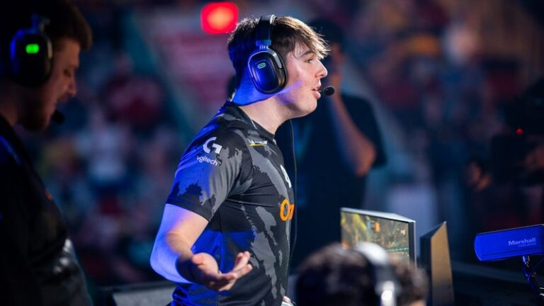

Players who play in RLC'S like pro
Brice “ExoTiiK” Bigeard was a key part in Karmine Corp’s success at the start of last season, especially with his impressive display at the Winter Major. His ability to make the game look so simple whilst remaining creative and efficient is what makes ExoTiiK stand out from the rest. He now has an impressive display of achievements, including 3 regional wins, one major win and a top 4 at the World Championships, where they had a very close series against the dominant Team Vitality.
Sadly we won’t get to see the old Karmine Corp roster take revenge on Vitality this year, however I still expect ExoTiiK to contend at the top of Europe this season alongside M0nkey M00n on Team BDS.
Brice “ExoTiiK” Bigeard was a key part in Karmine Corp’s success at the start of last season, especially with his impressive display at the Winter Major. His ability to make the game look so simple whilst remaining creative and efficient is what makes ExoTiiK stand out from the rest. He now has an impressive display of achievements, including 3 regional wins, one major win and a top 4 at the World Championships, where they had a very close series against the dominant Team Vitality.
Sadly we won’t get to see the old Karmine Corp roster take revenge on Vitality this year, however I still expect ExoTiiK to contend at the top of Europe this season alongside M0nkey M00n on Team BDS.
Brice “ExoTiiK” Bigeard was a key part in Karmine Corp’s success at the start of last season, especially with his impressive display at the Winter Major. His ability to make the game look so simple whilst remaining creative and efficient is what makes ExoTiiK stand out from the rest. He now has an impressive display of achievements, including 3 regional wins, one major win and a top 4 at the World Championships, where they had a very close series against the dominant Team Vitality. Sadly we won’t get to see the old Karmine Corp roster take revenge on Vitality this year, however I still expect ExoTiiK to contend at the top of Europe this season alongside M0nkey M00n on Team BDS.
Brice “ExoTiiK” Bigeard was a key part in Karmine Corp’s success at the start of last season, especially with his impressive display at the Winter Major. His ability to make the game look so simple whilst remaining creative and efficient is what makes ExoTiiK stand out from the rest. He now has an impressive display of achievements, including 3 regional wins, one major win and a top 4 at the World Championships, where they had a very close series against the dominant Team Vitality. Sadly we won’t get to see the old Karmine Corp roster take revenge on Vitality this year, however I still expect ExoTiiK to contend at the top of Europe this season alongside M0nkey M00n on Team BDS.
There is no doubt that Andrea “Radosin” Radovanović’s annoying playstyle and jolly personality played a huge part in Team Vitality’s dominance last season. Before the addition of Zen, Radosin and Alpha54 were still one of the top teams in Europe during the Winter split and placed in the top 8 at the Winter Major. Radosin brings his fair share of mechanical plays to the star-studded Team Vitality roster, which was shown especially on this run to the top 8. After picking up Zen, they went on to win all three regional events in the Spring Split, the Spring Major and the World Championships. This new Team Vitality are yet to lose an RLCS event, and Radosin is at the very heart of this roster. It is unbelievable that a player who was relatively unproven before RLCS 22-23 has now earned over $330,000.
Evan “M0nkey M00n” Rogez is most notably known for his extremely quick, efficient gameplay and decision making, using his incredible intelligence of the game to score and create goals for his team. After their horrific start to the season, it was remarkable that Team BDS were able to turn their season around and make it to the last 2 Grand Finals of the season after bringing in Rise. M0nkey M00n was finally able to prove that he is still one of the greatest players in the world again, after undoubtedly being the best in the previous season. He has earned over $700,000, and is by far the highest earning Rocket League pro of all time. His list of achievements is endless, winning 8 regionals, all 3 RLCSX Majors, second place at the RLCSX Championship, RLCS 21-22 Fall Major Champion and RLCS 21-22 World Champion, 2nd RLCS 22-23 Spring Major, 2nd RLCS 22-23 World Championships. M0nkey M00n is slowly entering the argument of being the greatest Rocket League Player of all time.

1. Zen
2. Vatira
3. Alpha54

4. Rise

5. Monkey Moon

6. Radosin

7. Beastmode

8. Atow

9. LJ